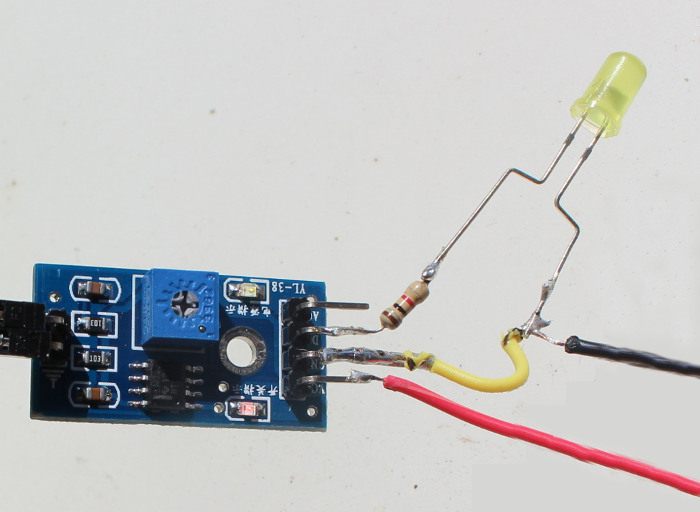
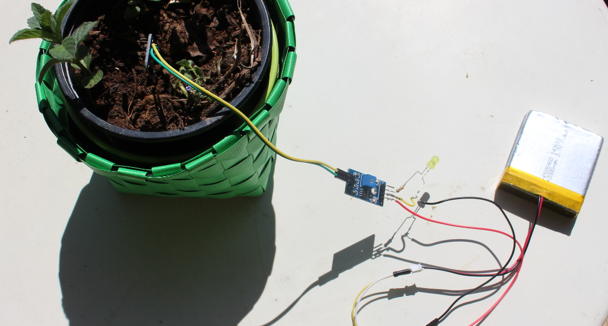

low budget humidity sensing
I tend to forget watering my plants, so I decided to create a own watering reminder. I thought it would be fun so simply turn on a led, when the ground is too dry. There are quite different soil meters which differ mostly in accuracy and current consumption. For simplicity I’ll stick with the one proposed by tiago as you can get it for around 1$ at aliexpress (in germany you wouldn’t even get the wires for this price).
Sadly I could not find any English datasheet and as my Chinese is pretty bad, but the setup i really straight forward. There is a VCC and GND pin which have to be connected as always. Additionally there is a A0 pin for analog output, and D0 for digital output. For plotting graphs and stuff we need the analog output, but as I only want to turn on a light the D0 is enough. D0 turns HIGH as soon as a threshold is exceeded.
So what i actually did is powering the sensor via a lithium-polymer battery with 3.7V, soldering a 1k resistor between D0 and the LED’s +. With this setup the light turns on when the threshold is exceeded. The threshold can be configured by rotating the blue screw.
 {kind=link}
{kind=link}